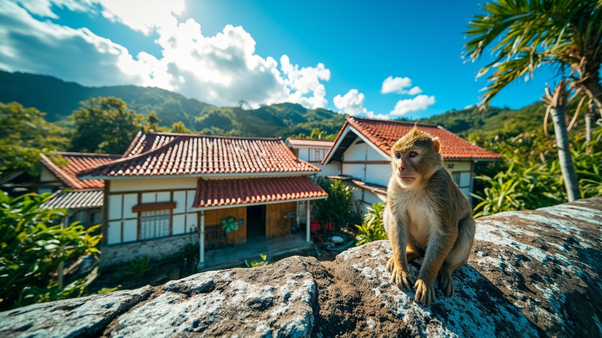
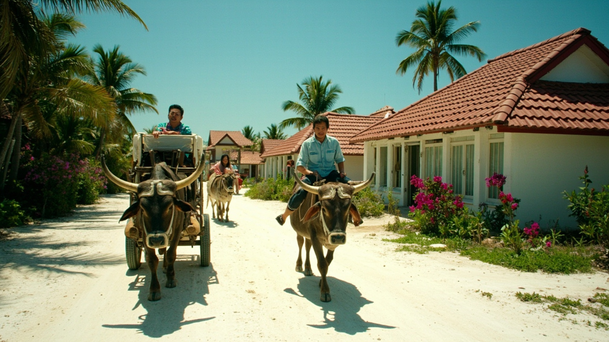
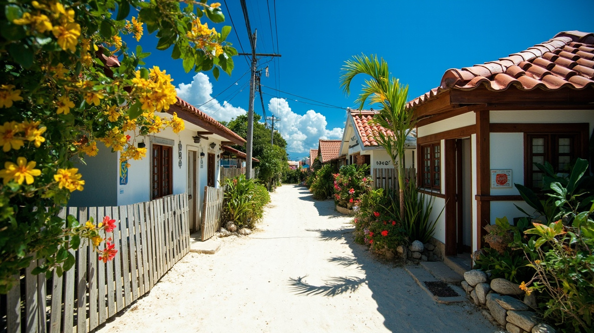
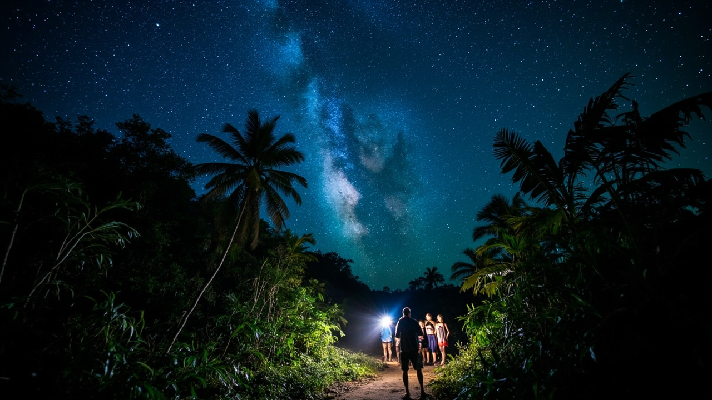

🌊 6/19 (五) | 川平藍與松鼠猴
⛅ 天氣
08:35


上午
📍 導航至川平灣
川平灣 (Kabira Bay) 🌊
搭乘玻璃底船欣賞珊瑚礁與熱帶魚。早上的光線最透亮，海面如玻璃般清澈，這就是傳說中的「川平藍」。
🚤 BLUE CORAL 玻璃底船
川平灣唯一裝冷氣的遊船，出示台灣虎航機票還享有船票優惠價！
午餐
下午
📍 導航至八重山民俗村
八重山民俗村 (Yaima Village) 🐒
與松鼠猴互動的趣味景點。還有傳統紅瓦屋建築可以拍照。

⚠️ 松鼠猴互動提醒：松鼠猴雖然可愛，但極度熱情且會搜口袋、開包包拉鍊。進去互動區前，請務必把身上的小物件（墨鏡、耳環、零錢、手機吊飾）收進包包裡，包包一定要拉好拉鍊！
傍晚
夕陽
天使棧橋看夕陽 🌅
在飯店的「天使棧橋」欣賞全島最美夕陽。
✨ AI 示意圖
晚餐
🏝️ 6/20 (六) | 夢幻沙洲（跳島日）
⛅ 天氣
早上
悠哉早餐 + 飯店海邊設施 🌊
悠哉吃完早餐後在飯店享受海邊設施、沙灘、泳池。
午餐
13:00
📍 導航至幻之島
幻之島 (Hamajima) 🏖️
參加半日遊 Tour登陸夢幻之島。這座隨潮汐浮現的沙洲非常夢幻，是浮潛與拍照的首選。
✨ AI 示意圖
💡 提醒
記得帶泳衣、防水手機袋、防曬！船班依潮汐時間調整。
晚餐
飯店內餐廳 or 外出覓食 🍽️
看當天體力狀況決定，可直接在 Fusaki 飯店內享用 buffet，或再開車出去市區覓食。
🐃 6/21 (日) | 竹富島水牛車（跳島日）
⛅ 天氣
早上
中午
13:00
📍 導航至竹富島
水牛車遊竹富島 🐃
預約 13:00 水牛車，漫步在白砂與紅瓦民宅間，感受沖繩古老氛圍。

📍 必訪景點
西棧橋（看海）、星砂濱 (Kaiji Beach) 尋找星砂。

午餐
晚餐
19:30
夜間星空 & 叢林夜遊 🌌
探索與白天截然不同的石垣島夜晚風貌。

✨ AI 示意圖
晚上
回 Art Hotel 大浴場泡湯 🛁
結束整天行程，回飯店大浴場泡湯放鬆。
🏨 宿：Art Hotel Ishigakijima
🦇 6/22 (一) | 深入地底奇景 + 採購
⛅ 天氣
上午
午餐
隨意吃 🍜
市區隨意吃。
下午
下午
逛街採購行程 🛍️
石垣島伴手禮採購攻略：
🏪 採購清單
• Euglena Mall（公設市場）：步行可達，買石垣鹽、辣油、織布
• 唐吉訶德：全島品項最全，免稅品一次買齊
• AEON MaxValu 超市：零食、石垣牛、泡麵
• EDION 電器行
• SAN-A 石垣 City
• 唐吉訶德：全島品項最全，免稅品一次買齊
• AEON MaxValu 超市：零食、石垣牛、泡麵
• EDION 電器行
• SAN-A 石垣 City
💡 採購秘訣：先去唐吉訶德買藥妝與免稅品，最後再去 MaxValu 掃蕩零食與飲料。MaxValu 旁邊還有一間大的藥妝店 Drug Eleven，如果唐吉訶德缺貨可以在這裡補齊。
19:00
還車 🚗
19:00 前還車，步行回飯店整理行李，準備隔天早起。
✈️ 6/23 (二) | 賦歸
⛅ 天氣
09:25